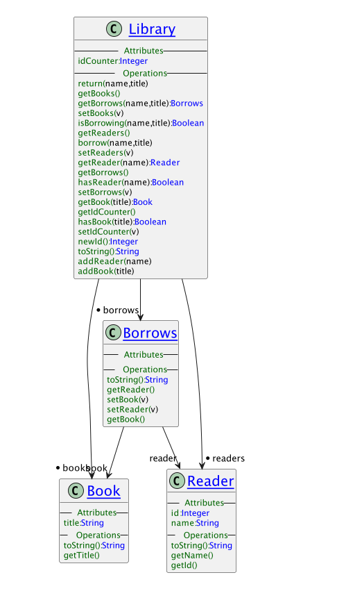
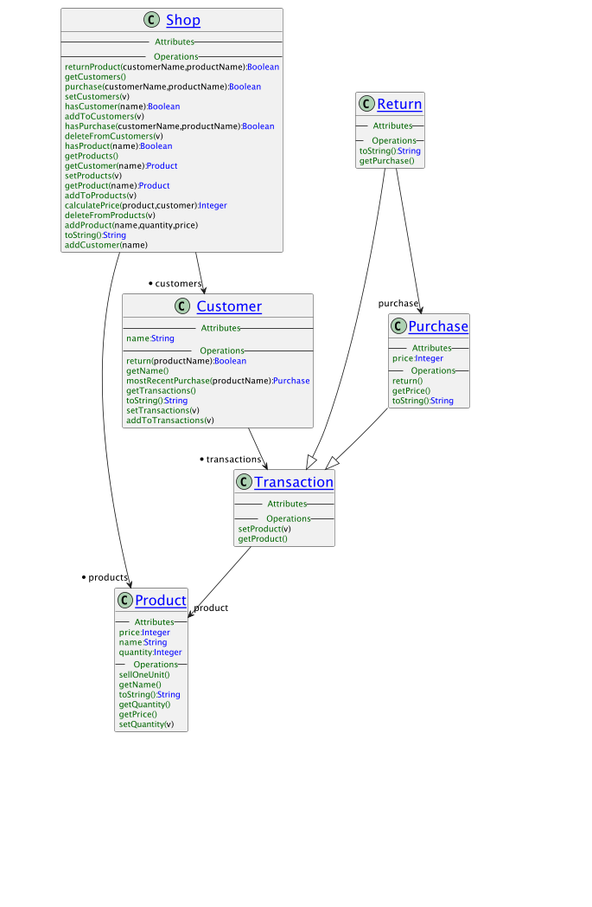

Language Oriented Text Editing Powered by XMF and XOCL
What is XMF? XMF is a language platform for working with text-based languages. XMF provides a high-level language called XOCL that offers a large number of useful language constructs. The XOCL data model is called XCore, everything written in XOCL - including XOCL programs - are defined by the XOCL data model. Furthermore, XCore can be extended (or even changed) making the XMF platform ideal for meta-programming: defining new language constructs.
Why would anyone be interested in XOCL? Many languages such as Java and Python provide increasingly abstract programming constructs where implementation details are hidden from the programmer. This makes it easier to check the use of the constructs and makes the code easier to maintain. XOCL already has many such constructs and it is easy to add your own.
Why would anyone be interested in meta-programming? Many languages such as Python and Java increasingly provide access to the type-level and expose platform execution mechanisms. This makes it easier to create adaptive systems. Access to programs-as-data within a programming environment makes it easy to create Domin Specific Languages and to create applications that consist of components written in languages appropriate to a range of domain experts.
What is XEditor? XEditor provides a language-aware text editor for creating and interacting with XMF-based applications. XEditor provides access to XMF source files located in a folder structure, allows the files to be viewed and edited. The files can then be loaded into the XMF machine leading to new definitions or modifications to exiting definitions. The XEditor console provided interactive access to the current set of definitions.
XEditor is the sibling platform of XEditor. Both platforms are based on XMF , XCore and XOCL. XEditor builds text-based tools using XMF (with some associated graphics tooling), XModeler builds (multi-level) diagram-based tools using XMF (with some associated text tooling).
What can I use XEditor for? The following types of application would be ideal for XEditor:
Editor is open source and consists of several components, all of which can be downloaded from This GitHub Repository:
The machine and editor downloads are Eclipse projects which can be loaded into Eclipse and run as a Java application using console.Console as the main class.
Alternatively, the script xeditor in com.ceteva.xmf.xeditor can be used to start Editor from its parent folder.
The XEditor consists of a file browser, file editor, menu bar, and an interactive console.
The XEditor file browser (shown on the left) which provides access to the files from a supplied collection of root folders. The XEditor is supplied with its own source code contained within the folder xmf-src. Normally the XEditor source folder will be one of the folders in the file browser. With the file browser you can:
Files called Manifest.xmf are treated specially. They contain manifests that refer to folders and files. Loading a manifest causes XMF to load the files references by the manifest in the order that they occur.
The XEditor editor panel is shown to the right of the file browser and contains the currently selected file. The editor will be configured to understand the language of the file contents and to provide suitable functionality. Normally this is the XOCL language. With the editor panel you can:
The editor panel is a right-click menu that provides access to:
The editor-panel provides language-specific functionality applied to the file contents:
The XEditor console is used to interact with the current definitions loaded into the XMF machine. The initial state of a machine consists of the XOCL language and its associated libraries in addition to any initialisation files that have been loaded on startup. The console works by reading in an expression or a command and then printing out a result. If you type the name of any global named-element (defined in Root or XCore) then the console responds by printing out the value associated with the name. Typically the console is used to create or reference an object and then either reference the value of the object’s slot or send the object a message. For example the following inspects the attributes slot of the object named Class:
[1] XMF> Class.attributes.name;
{
constructors,
isAbstract,
attributes,
resourceName}
[1] XMF>
and sending a message:
[1] XMF> Class.allAttributes().name;
{
bindings,
constraints,
default,
constructors,
imports,
operations,
isFinal,
resourceName,
name,
parents,...}
[1] XMF>
Notice the use of … which means that the current pretty-printing length has been reached. This can be changed by:
[1] XMF> ?pp l 100
true
[1] XMF> Class.allAttributes().name;
{
bindings,
constraints,
default,
constructors,
imports,
operations,
isFinal,
resourceName,
name,
parents,
contents,
isAbstract,
owner,
grammar,
documentation,
attributes}
[1] XMF>
The use of ?pp is an example of a top-level loop command. You can print out the documentation on the top-level commands using ?h:
[1] XMF> ?h
The XMF top level loop is a command interpreter that reads
commands typed at a console, evaluates the commands and then
prints the result. The interpreter understands any valid XMF syntax
(such as XOCL) including language extensions that have been defined
using XBNF and accessed using ‘@’. When you type these commands
you must terminate them with a ‘;’ before pressing return (note that
‘;’ is the command terminator and commands may span several lines).
Note if a single quote (’) is used in a command it should be part of
of a pair. If not, input will be halted until another one is entered.
The command interpreter has its own state: it remembers the most
recently evaluated values and the last error that occurred.
The variables v0, v1 and v2 are the last three values produced
by the top level. These variables can be useful when you want to
navigate to or compute a value and then use it in a subsequent
command. Errors may occur in commands typed at the top level.
When an error occurs, an exception is thrown and caught by the top
level loop. The loop then prints out error diagnostics. The value
of the variable xx is the most recently raised exception.
The XMF Console uses the Escape key as an interrupt. This can be
useful if you have caused XMF to enter an infinite loop or to start
a lengthy calculation that you wish to terminate. Interrupts are
handled by XMF on the next instruction cycle, the interrupt will
throw an exception.
The command interpreter has its own command language.
Each top level command starts with a ‘?’. Top level commands must
occur on a single line and are terminated by return rather than ‘;’.
?ah Help on the syntax of patterns for ?a.
?a <PATTERN> Named elements apropos the pattern.
?cl [<FILE>] Combines ?c and ?l.
?c <FILE> Compile the file.
?c Compile the most recently compiled file.
?h Top level command help.
?i [+|-] <PATH>* Import(+) or remove(-) a name space at the top level.
?l <FILE> Load the binary file.
?l Load the most recently loaded binary.
?m (b|l|d|bl) [<Dir>] Build, load or delete manifest entries.
?m w <Dir> <File> Write boot file based on manifest to file.
?m t <Dir> (s|b) Touch binaries or sources.
?o Print out the current options.
?o saveSource bool Toggle compiler saving source code.
?o sourcePos bool Toggle compiler saving source positions.
?o localNames bool Toggle compiler saving local names.
?o checkTypes bool Toggle compiler type checking code.
?pp Display the current pretty-printing settings.
?pp (d|l,p,r) <INT> Set the pretty print depth, length, page or ribbon.
?pp (on|off) Toggle pretty printing at the top level.
?pp x Display the most recent exception in full.
?sh Start a dos shell. Enter exit to return.
?s <FILE> Saves a system image in the file.
?s <FILE> <FILE> Saves an image that boots from the second file.
?stats Print machine stats.
?t <FILE> Update the last write date of the file.
?x Exit current XMF level.
The XMF Menu provides access to system-level functionality:
Compile is used to compile all of the system-level files contained in xmf-src. If any of the *.xmf files are our of date with respect to the corresponding *.o then they are compiled.
Touch is used to make all *.xmf source files or all *.o files up-to-date.
By touching all the source files and then selecting Compile (above),
the entire system is recompiled.
Documentation is used to either generate all system documentation or to
view the documentation. The system documenation contains all packages that are reachable from Root. The format of the documentation is HTML and is contained in the xmf-doc folder.
Build is used to recreate the system images. The system images are contained in xmf-img. You should build the XMF image and then build the console image. The XEditor boots from console.img. If you have changed any of the system files then you should recompile the system, rebuild the system and then restart XEditor.
Find displays a number of dialogs that can be used to interactively find
elements of the system.
Diagrams displays the interactive diagram tool.
In general an XOCL file should have the following elements in order…
parserImport LanguageNameSpace;
The language name space is typically a package that defines syntax classes. A syntax class SC has a grammar and can therefore be used as @SC … in the body of this file. There can be any number of parser import declarations.
import ImportedNameSpace;
The imported name space is typically a package that contains class and operation definitions that are referenced by name in the body of the file. There can be any number of import declarations.
The body of the file starts here…
context NameSpace
NamedElement
The named element (for example a class or an operation) is added to the name space when the file is loaded.
There are example models in xmf-src/models:
A library model 
Try running Models::Lib::test1()
A shopping model 
// Some key integer operations. Browse XCore::Integer for more details.
// Conversions...
123.asFloat().println();
123.asSeq().println();
123.toString().println();
// Comparison...
123.max(100).println();
123.min(100).println();
// Modulo...
123.mod(2).println();
// Square Root...
123.sqrt().println();
// Sequence...
0.to(20).println();
// Character codes...
Root::a := 97;
Root::A := 97 - 26;
Root::one := 49;
Root::newline := 10;
Root::space := 32;
// Character predicates...
a.isAlphaChar().println();
a.isLowerCaseChar().println();
a.isUpperCaseChar().println();
A.isUpperCaseChar().println();
one.isNumericChar().println();
newline.isNewLineChar().println();
space.isWhiteSpaceChar().println();
// Random number ...
Integer::random(10).println();
// Some key float operations. Browse XCore::Float for more details.
// Coversion to integer...
12.3.ceiling().println();
12.3.floor().println();
12.7.ceiling().println();
12.7.floor().println();
12.7.round().println();
// Trigonometry...
45.0.cos().println();
45.0.sin().println();
// Creation from integers.
Float(10,5).println();
// Some key boolean operations. Browse XCore::Boolean for more details.
true.booland(false).println();
false.boolor(true).println();
// Some key string operations. Browse XCore::String for more details.
// Size...
"a string".size().println();
// Conversion...
"true".asBool().println();
"123.45".asFloat().println();
"123".asInt().println();
"123".asSeq().println();
"123".asSet().println();
"abcdef".asSymbol().println();
"<x>body</x>".asXML().println();
"ABCDE".toLower().println();
"ABCDE".toUpper().println();
"|".print();" xyz ".stripWhiteSpace().print();"|".println();
"|".print();" xyz ".stripLeadingWhiteSpace().print();"|".println();
"|".print();" xyz ".stripTrailingWhiteSpace().print();"|".println();
"|".print();"*******xyz".stripNonAlphaChars().println();
"abcabc".subst("xxx","bc",true).println();
"abcabc".subst("xxx","bc",false).println();
"a>b>c>d>e>f".splitBy(Seq{">".at(0)},0,0).println();
"abcdefghijkl".subString(0,5).println();
"abcdefghijkl".truncate(5).println();
"abcdefghijkl".upperCaseInitialLetter().println();
"ABCDEFGHIJKL".lowerCaseInitialLetter().println();
// Indexing...
"12345".at(3).println();
"12345".indexOf("2",0).println();
// Files...
xmf.homeDir().println();
(xmf.homeDir() + "/xmf/init.xmf").fileExists().println();
(xmf.homeDir() + "/xmf/init.xmf").fileSize().println();
(xmf.homeDir() + "/xmf/init.xmf").isDir().println();
(xmf.homeDir() + "/xmf").isDir().println();
(xmf.homeDir() + "/xmf/init.xmf").isOlder(xmf.homeDir() + "/XMF/XMF.o").println();
(xmf.homeDir() + "/xmf/init.xmf").parentDir().println();
Root::v := Vector(5);
v.put(0,10);
v.put(1,11);
v.put(2,12);
v.put(3,13);
v.put(4,14);
v.println();
v.ref(2).println();
v.indexOf(12).println();
v.size().println();
v.asSeq().println();
// Get the contents of a file...
@XOCL::WithOpenFile(fin <- xmf.homeDir() + "/xmf/init.xmf")
let size = (xmf.homeDir() + "/xmf/init.xmf").fileSize() then
chars = Vector(size)
in fin.read(chars);
chars.asString().println()
end
end;
You can save the current state of the system as an image. The operation
XMF::saveState takes a file and an operation of one argument. The operation is called with the command line arguments when the image restarts. XMF is in control of the Console application and therefore must start it up before the operation returns. The saved image must be used as the boot image at startup. Typically images are found in com.ceteva.xmf.system/xmf-img/...
xmf.saveState(xmf.homeDir()+"/example_image.img",
@Operation(initArgs)
format(stdout,"Restart~%",[]);
Root::Console := xmf.javaClass("console.Console");
// Create the console...
Console();
// Create the browser tree. This is set as part of the image creation in BootConsole.xmf
Console.CONSOLE.setRoot(XEditor::getBrowserTree(Root))
end);
Written with StackEdit.